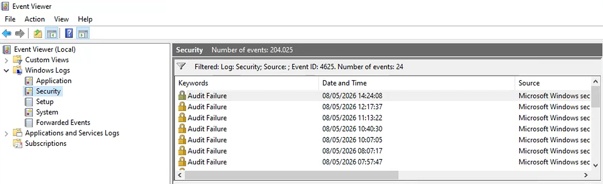

Tutorial – Active Directory Health Check
This check verifies that Active Directory security auditing is enabled and that security events are properly logged on Domain Controllers.
Open PowerShell on the Domain Controller and run:
auditpol /get /category:*
Verify that the following categories are configured with Success or Success and Failure.
| Category | Expected Result |
|---|---|
| Logon | Success and Failure |
| Account Lockout | Success |
| Special Logon | Success |
| User Account Management | Success |
| Security Group Management | Success |
| Directory Service Access | Success |
| Kerberos Authentication Service | Success |
| Credential Validation | Success |
Open Event Viewer on the Domain Controller.
Verify that the Security log is actively recording events.
Use Filter Current Log and search for:
4625
Event ID 4625 corresponds to failed logon attempts and is commonly present in Active Directory environments.
